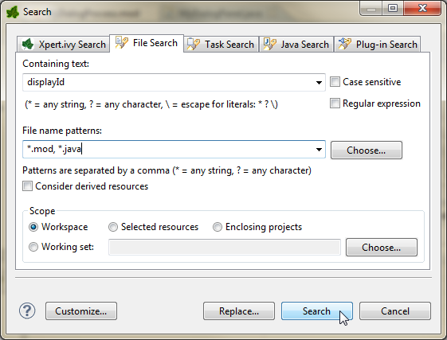
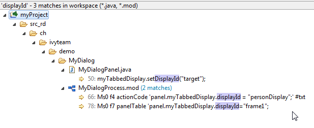
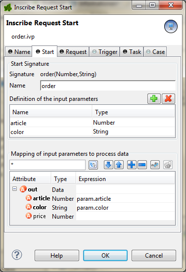
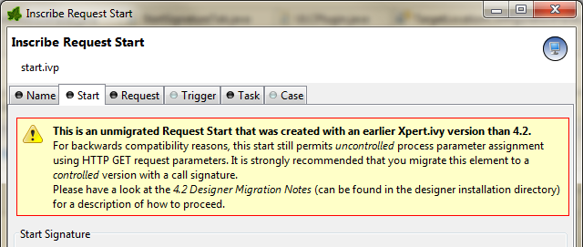

Migration Notes for Xpert.ivy Designer 4.1.3 - 4.2
Most of the incompatibilities can be resolved automatically by project conversion in the Designer.
However,�some issues must be fixed manually afterwards. Those are described below.
Manual fixing of projects (after automatic conversion)
You might have to manually adjust parts of your old projects that cannot be converted automatically. What you have to fix exactly, depends on the features that your project was making use of.The ID of a Display must only be set once
Since 4.2 the repeated setting of a display ID provokes an error. Unfortunately this behavior was allowed beforehand and consequently lead to problems when loading/unloading Rich Dialogs into/from a display that had changed it's ID at runtime.You have to ensure that the method
public void setDisplayId(String displayId)
is only called once per display instance. If you are setting display ID's inside RichDialog Logic, then you should ensure that
- this code is called only once (for example only in the start method,�never inside an event process or loop of some sort)
- the display ID is not set otherwise, e.g. in the properties of the RichDialog panel
If you get more than one hit inside the same Rich Dialog (e.g. in MyRichDialogProcess.mod and MyRichDialogPanel.java) then you must reduce the code to one occurrence. This applies both to Java and IvyScript code.


This Rich Dialog definitively needs some manual adjustment of it's code! Remove two of the three occurrences.
Define a call signature for Start Request elements
In earlier Xpert.ivy versions (up to 4.1.3)�it was possible to pass process data to a request start as GET parameters of an *.ivp link. If��the GET parameter name matched the name of a process data field, then the parameter value was assigned to that field. e.g.:.../order.ivp?article=20393&color=red
was mapped to
in.article = 20393
in.color = "red"
This behaviour poses a potential security risk:�imagine that the process data also contains a field in.price which is normally assigned by the process after fetching the article details from the data base: nothing prevented a misuse where another GET parameter &price=0 was added by the client and�potentially resulting in a free purchase. Therefore unlimited parameter assignment has consequently been suppressed in Xpert.ivy 4.2.
It is still possible to assign process parameters in this way, but from 4.2 on, only to process data that was explicitly defined as being part of the request start's start signature (similar to Rich Dialog or Sub Process calls) can be auto-initialized from GET parameters of the request:

If this request start is triggered with a link to .../order.ivp?article=222&color=green&price=0 then only article and price parameters are assigned.
The price parameter is ignored.
In order not to break old projects that made use of this feature, Xpert.ivy 4.2 still permits "unlimited assignment" to old request starts. I.e. if you use an old project with Xpert.ivy 4.2 and do not define a signature for your old request starts, then they will still behave as before (with the consequence, that price might be assigned maliciously).It is strongly recommended, that you explicitly define a call signature for all of your old request starts. Once you edit the signature and save it then the request start element only accepts the defined parameters for assignment (including none).
In order to warn you about the described condition, the inscription mask of the unmigrated Request Start elements displays a warning when you open it:

To get rid of this warning, you must edit the signature and save it, even if you want to disallow the passing of GET parameters completely.
- Add a random parameter to the signature
- Close the inscription mask with Ok and open it again
- Remove the random parameter
- Save the inscription mask again
Note that this behavior also allows you to change the process data names, without breaking the calling interface: you can rename the process data field article to itemId and the invocation with .../order.ivp?article=293 will still work, if you map the parameter with in.itemId = param.article.
New RIA Certificate
Both Designer and Server have been equipped with a new certificate, which will be presented to end users when starting a Rich Application running on a 4.2 server for the first time:
Please inform your users, that they have to accept the above dialog (it is recommended to tick the check box to prevent this dialog from appearing again).
RDatePicker Value Changed event behavior
The behavior of the Value Changed event of the RDatePicker widget has changed in 4.2. In a earlier Xpert.ivy versions the Value Changed event was always fired when a date was selected, or when leaving the widget and the date has changed.Now, the Value Changed event occurs like in a RTextField only when a user leaves the widget and the value has changed. In Xpert.ivy 4.2 we have added the event Action. The Action event occurs whenever a user picks a date, or when he enters it into the text field manually and hits an Enter key or leaves the field.